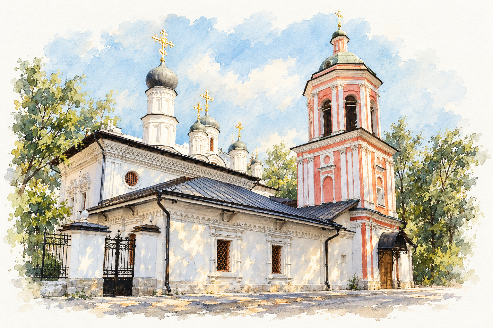

Четверг · 08:15

РУССКАЯ ПРАВОСЛАВНАЯ ЦЕРКОВЬ
МОСКОВСКАЯ ЕПАРХИЯ
ХРАМ СВЯТОГО АПОСТОЛА
И ЕВАНГЕЛИСТА
ИОАННАБОГОСЛОВАНА БРОННОЙ
Дорогие братья и сёстры!
Приглашаем вас на богослужения.
Ближайшие службыОктябрь 2026
Часы.
Суббота · 18:00
Всенощное бдение
О нашем храме
Храм в старой
Бронной слободе
Наш храм посвящён святому апостолу и евангелисту Иоанну Богослову. Его история связана с Бронной слободой — поселением московских оружейников. Строительство каменной церкви началось в 1652 году.
История храмаПрихожанам
Таинства
и требы
О подготовке к Крещению, исповеди,
Причастию и Венчанию.
Подготовка к Крещению+
Для взрослых, желающих креститься, проводятся огласительные беседы. Родителям и крёстным перед Крещением ребёнка также необходимо пройти собеседование. О времени бесед и записи на Крещение можно узнать в храме.
О Крещении ↗Исповедь и Причастие+
Исповедь совершается после вечернего богослужения или на утрене, если вечерней службы не было. Если вы готовитесь к исповеди впервые, скажите об этом священнику. Вопросы о подготовке к Причастию лучше обсудить с ним лично.
О подготовке ↗Венчание+
Перед Венчанием необходимо побеседовать со священником. Дату и время таинства согласовывают в храме заранее.
О Венчании ↗Беседа со священником+
Если у вас есть вопросы о вере или церковной жизни, обратитесь в храм. Время личной беседы можно уточнить по телефону +7 (495) 697-98-20.
Наш приход